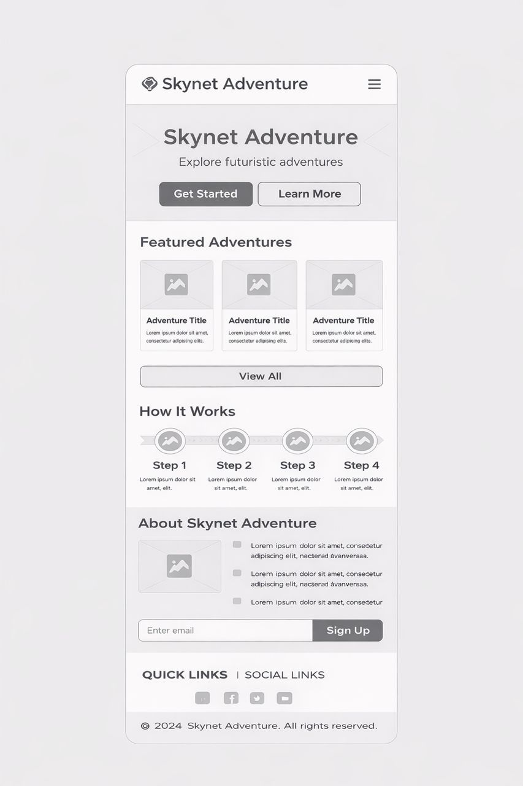

Site Name
SkyCast Adventures
Reason: The name combines "Sky" (weather focus) and "Cast" (forecasting), paired with "Adventures" to appeal to outdoor enthusiasts looking for their next excursion.
Site Purpose
SkyCast Adventures provides real-time weather data integrated with an activity recommendation engine. It helps users decide which outdoor hobby (hiking, cycling, photography) best fits the current environmental conditions and provides critical safety checklists for those conditions.
Scenarios
- "I want to go for a bike ride today, but I'm not sure if the wind speed is too high for safety. What does SkyCast recommend?"
- "I have a free afternoon; what is the best outdoor activity to do right now based on the current temperature and UV index?"
Color Schema
Primary Color: #0077B6 (Pacific Sky Blue) - Used for navigation backgrounds and primary buttons.
Secondary Color: #023E8A (Deep Ocean Blue) - Used for headings and strong emphasis text.
Accent Color: #CAF0F8 (Light Mist) - Used for page backgrounds to maintain a clean, airy feel.
Typography
Ubuntu (Bold): Selected for all headings to provide a modern, tech-friendly brand identity.
Roboto: Selected for body copy and checklists due to its high legibility on mobile devices.
Wireframe
Mobile View
[Description: A single-column layout featuring a prominent weather widget at the top, followed by vertically stacked activity cards.]
Desktop View
[Description: A multi-column layout with a horizontal navigation bar, a large weather hero section, and a 3-column grid for activity recommendations.]